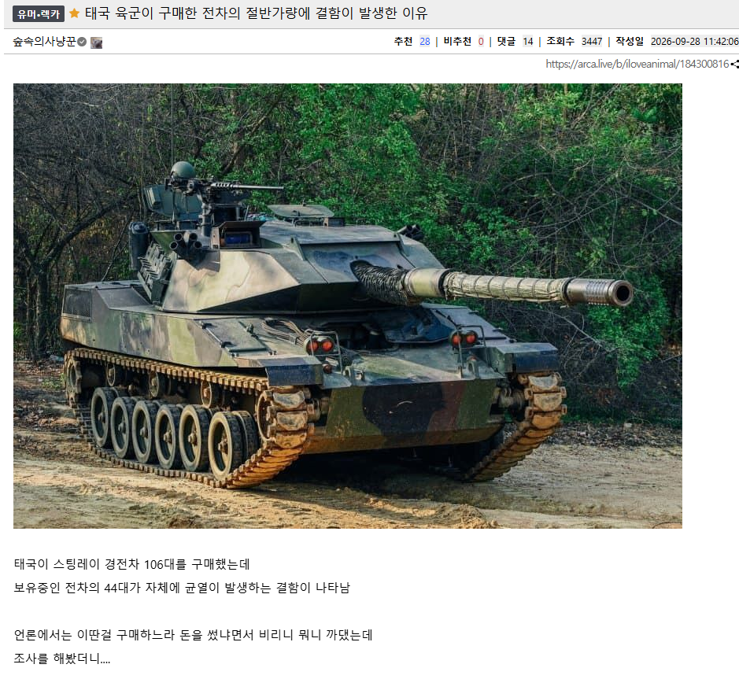

101 · 6 · 11 시간 전 · 원문

참고로 높이점프 최고 기록= 2M였다고함
수집 당시 댓글 6개
허리디스커 · 2 시간 전
점프 못하는거였어? 메탈슬러그는!?
초격아츠 · 1 시간 전
점프좋아하면 차륜형을 샀어야지
↳ 답글 · 복수하는자 · 39 분 전
도로도 없는 정글니1거들이 뭔 차륜형임ㅋㅋ
이모티콘혐오자 · 53 분 전
할거면 쇼바넣고 해라 이새기들아
음흉한명탐정 · 52 분 전
딱봐도 태국국왕 행사때 인도마냥 발리우드 찍으려고 연습했네
↳ 답글 · 친뽀다이슷끼 · 32 분 전
이게마따. 탱크몰고가다 국왕만나서 점프 그랜절하다 금간거다
점프 못하는거였어? 메탈슬러그는!?